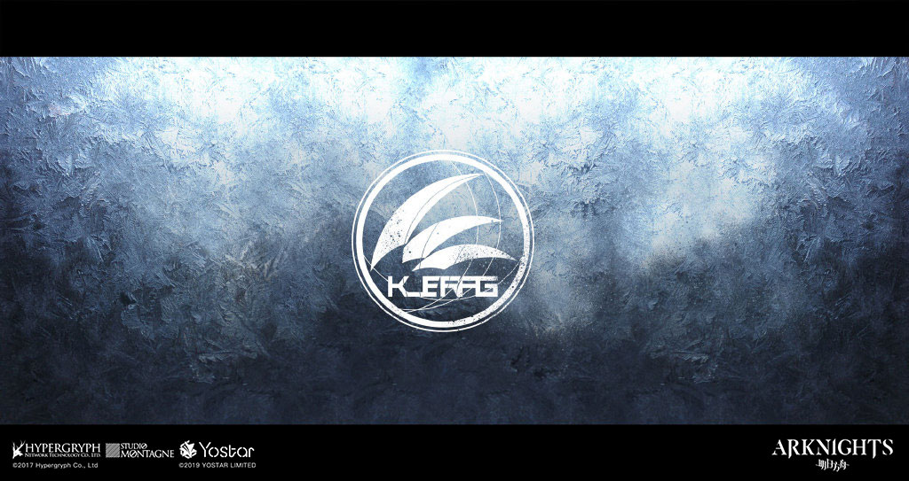
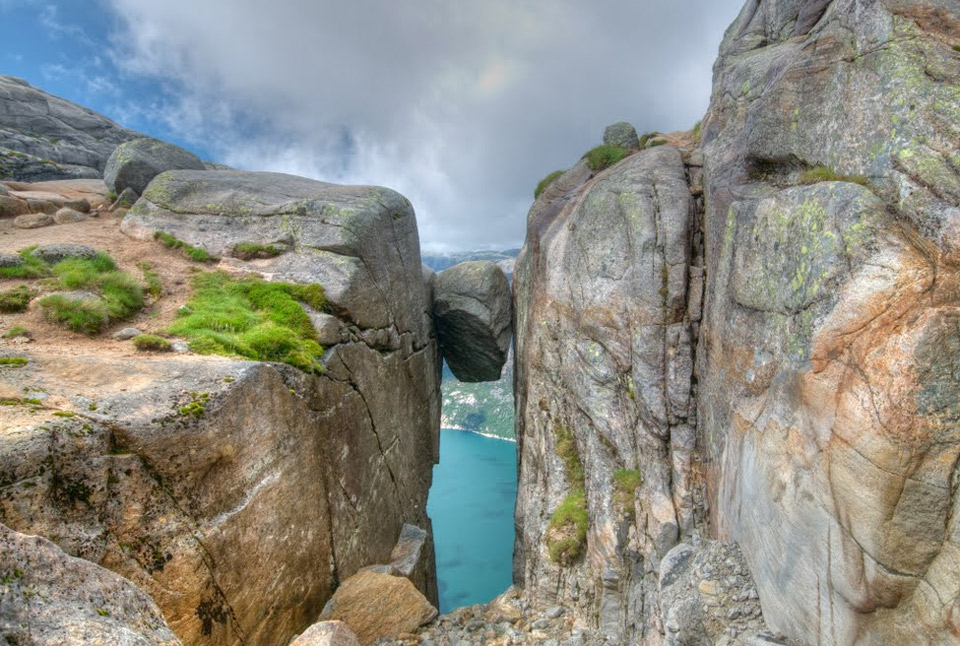
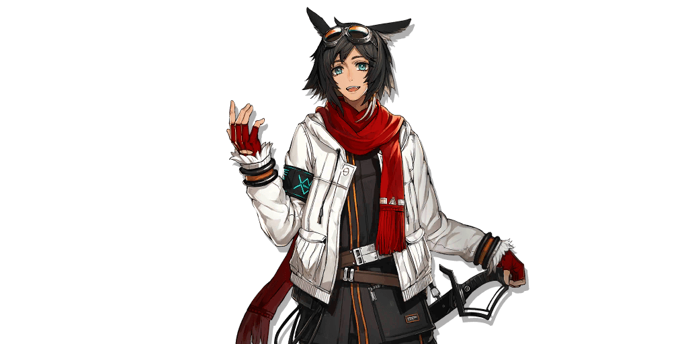
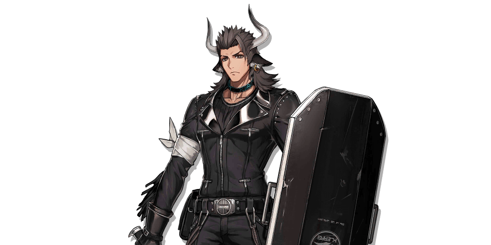
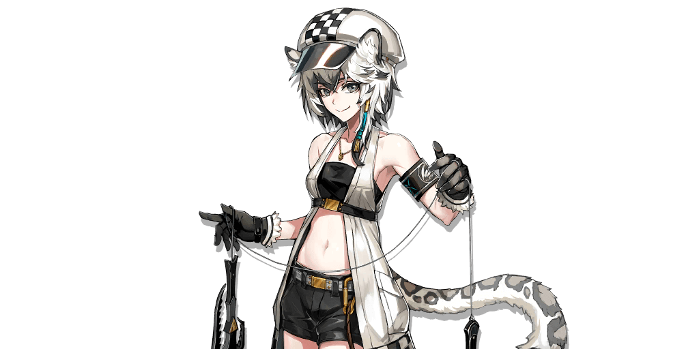
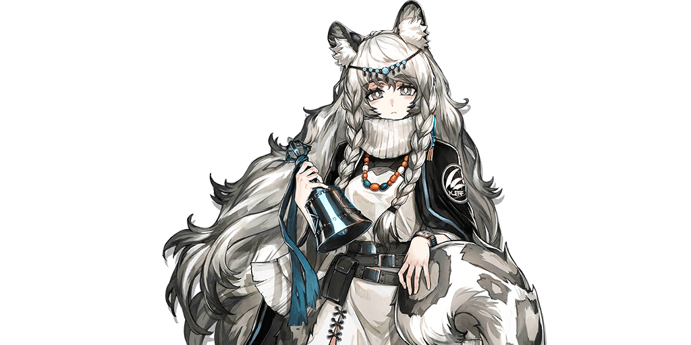
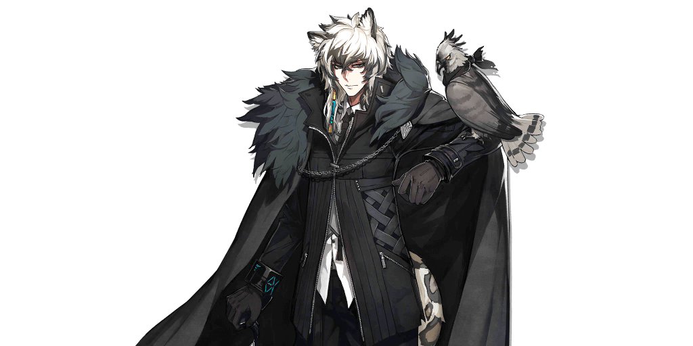

Histories
In Arknights, there are several factions.
Each faction has its own interest and goals.
Factions can be organizations or nations.
One of them is Kjerag.
Game

Kjerag is a religious country with a relatively small territory.
Religious center is Karlan holy mountain,
which is also the source of the Karlan Commercial Co.
Because it snows all the year round,
they call the country "Snow Realm"
Real Life

Kjerag or Kiragg is a mountain in Sandnes municipality in Rogaland county, Norway.
The 1,110-metre (3,640 ft) tall mountain sits on the southern shore of Lysefjorden,
just southwest of the village of Lysebotn.
(Wikipedia)
Although the name 'Kjerag' was from Norway, its prototype is obviously not Norway.
Most of the territory of Norway has a temperate maritime climate.
The climate is relatively mild and not cold,
it is impossible to have snowfall throughout the year,
so it does not meet the setting of "Snow Realm" in Kjerag.
(Further Read & Analysis)
Characters
Courier

As the messenger of the Snow Realm,
I'll definitely appear by your side when you need me.
Courier is a first-rate scout and messenger,
always delivering his charge with a customer-service grin.
He is a 4★ Skill-DP-Recovery Vanguard that specializes in Defense.
(Source)
Matterhorn

I will not step back, not even if this shield shatters the very next second.
Not because of my loyalty, but because of my conviction.
Matterhorn, trained from a young age to be bodyguard and protector of the SilverAsh family,
now lends his shield and strength to Rhodes Island as a representative of the Karlan Trading Company of Kjerag.
Matterhorn is a 4★ Defender who can block 3 enemies.
(Source)
Cliffheart

I'm Cliffheart, the one who dreams to touch the sky!
That's right, I'm really talented.
Despite being Infected with Oripathy,
Cliffheart retains a cheerful demeanor and wants nothing more than to bring the SilverAsh family closer together.
She is a 5★ Specialist Class who can Shift enemies by Pulling them with her climbing tools.
Although she is a physical melee damage dealer,
she can be deployed on Ranged Grids as well.
(Source)
Pramanix

Work hard, play hard, right? Don't force all those rigid rules on me.
With a peal of her Sacred Bell, the Kjerag Saintess protects her allies by weakening her foes.
Pramanix is a low-DP-cost Supporter unit who deals ranged Arts Damage and inflicts unique and powerful debuffs on enemies within her range.
(Source)
SilverAsh

Compassion saves no one on the battlefield.
The calm and collected owner of Karlan Trade is educated not only in economics but in battle tactics and fighting as well.
Now serving under contract with Rhodes Island,
this Ranged Guard specializes in both burst DPS and taking down cloaked enemies.
He can also perform ranged attacks that will deal 80% base damage.
(Source)
Others